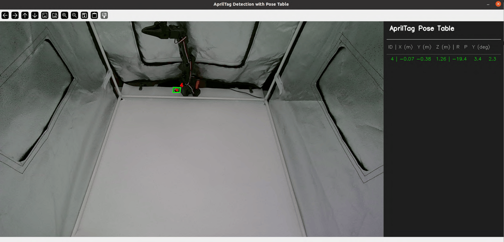
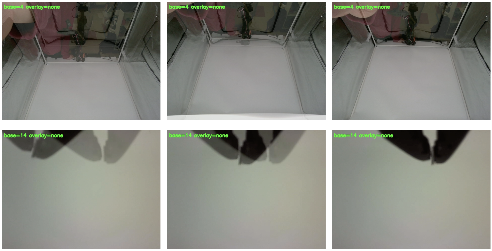

System Calibration
SO-101 arm calibration
Calibration video from LeRobot:
-
Calibrate the SO-101 follower according to the LeRobot Docs. Follow the video carefully, and ensure each motor is at the middle position before starting the calibration process.
- (Note: This means for the wrist roll motor, the end-effector should be oriented so that the camera is rotated 90° and pointing towards the right side when looking at the end-effector head on)
- During calibration, thoroughly rotate each of the six motors to their physical joint limits. Don't forget any motors!
-
After calibration is complete, the
calibration.jsonfile is typically saved to~/.cache/huggingface/lerobot/calibration/robots/<your-robot-id>in your root folder. Copy the generated calibration JSON file intovlareplica/calibration/robots/so101_followerinside your repo directory. - Rename it to
so101_follower_arm.json.
Camera Calibration
We first utilize an AprilTag mounted at a defined spot with respect to the box to allow general placement of the camera mount. Then, we utilize the idea of an image overlay to match the camera pose to the original VLA-Replica box camera pose as closely as possible.
AprilTag calibration
-
In a new terminal inside the virtual environment, run the calibration script (replace your-top-camera-index with the number you recorded in Software Installation):
python calibration/camera/detect_apriltag.py --camera-index <your-top camera-index>A GUI window will pop up, displaying the live camera feed alongside the estimated AprilTag pose.

AprilTag camera calibration GUI. The live camera feed (left) and the detected AprilTag pose table (right) are shown simultaneously. Adjust the camera position until the pose values match the table below. -
Reach inside the box and physically slide or tilt the camera mount along the PVC pipe until all reported values match the table below as close as possible (some error is acceptable):
X (m) Y (m) Z (m) R (deg) P (deg) Y (deg) -0.06 ± 0.01 -0.39 ± 0.01 1.25 ± 0.01 -18.5 ± 1.0 3.0 ± 1.0 2.5 ± 1.0 Once satisfied, press
qto exit the program.
Image Overlay Calibration
Although the AprilTag pose estimator may output values close to Table A.2, there may still be slight camera misalignment. To solve this, we utilize visual overlay matching (see below) to ensure the camera view is as close as possible to VLA-REPLICA’s original view.
-
First, calibrate the top camera for the second time. Run the following (replacing
your-top-camera-idwith with the number you recorded in Software Installation):python calibration/camera/overlay.py --overlay-image-folder calibration/camera/referenceImages/top --base-cam <your-top-camera-id>A GUI window will pop up, overlaying the live top camera feed with a wrist view reference image. Match the view of your camera with the reference image by reaching into the box and sliding or tilting the camera mount along the PVC pipe.
-
Next, calibrate the wrist camera. Run the following (replacing
your-wrist-camera-idwith with the number you recorded in Software Installation):python calibration/camera/overlay.py --overlay-image-folder calibration/camera/referenceImages/wrist --base-cam <your-wrist-camera-id>A GUI window will pop up, overlaying the live wrist camera feed with a top view reference image. Slightly loosen the M3 screw on the wrist camera mount on the SO-101, and match the view of your camera with the reference image by rotating the camera mount along the end effector.

Before the next step, ensure that:
- All six pose values (x,y,z,R,P,Y) match the targets in the table:
-
X (m) Y (m) Z (m) R (deg) P (deg) Y (deg) -0.06 ± 0.01 -0.39 ± 0.01 1.25 ± 0.01 -18.5 ± 1.0 3.0 ± 1.0 2.5 ± 1.0
-
- Reference images and camera views match almost identically for both top and wrist cameras.
Congrats! The environment setup is complete, and you are ready to start benchmarking your VLA models!
Next Step: Running Evaluations ➜